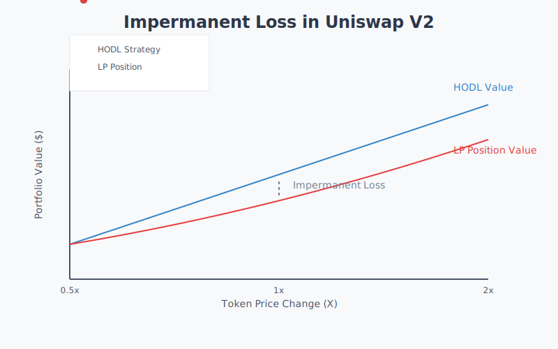

Web3 Terminology
Introduction
Understanding Web3 requires familiarity with a unique vocabulary that spans multiple disciplines: cryptography, economics, computer science, and social coordination. This guide organizes these terms into logical categories and provides clear explanations with relevant examples.
Evolution of the Web

Web 1.0 (1990-2004)
The first iteration of the worldwide web consisted primarily of static websites that users could only read. Information flowed in one direction - from website owners to visitors. Think of early news websites or company homepages that rarely changed and offered no interaction.
Web 2.0 (2004-2020)
The social web emerged, characterized by user-generated content, social networks, and interactive platforms. Users could both read and write content, but platforms owned and controlled the data. Facebook, Twitter, and YouTube exemplify Web 2.0 platforms where users create content but don’t truly own or control it.
Web3 (2020-Present)
The ownership web represents a fundamental shift where users can read, write, and own their digital assets and data. Instead of trusting platforms to manage our digital lives, Web3 uses cryptographic protocols and economic incentives to enable direct ownership and peer-to-peer interactions.
Core Concepts
Decentralization
Decentralization refers to the distribution of power, control, and decision-making across a network rather than concentration in a single entity. It exists on a spectrum across three key dimensions:
Architectural Decentralization: How many physical computers comprise the system? This measures the raw distribution of infrastructure - how many servers, nodes, or machines work together to maintain the network. A system running on thousands of independent computers is more architecturally decentralized than one running on a few data centers.
Political Decentralization: This dimension has two crucial aspects:
First, who controls the infrastructure? This looks at how many independent individuals or organizations operate the computers that run the network.
Second, and equally important, how are protocol changes decided and implemented? This governance aspect examines questions like: Who can propose changes? How are decisions made? What mechanisms exist for reaching consensus on updates? A truly politically decentralized system distributes both operational control and governance authority across a broad community.
Logical Decentralization: Does the interface and data structures appear more like a single monolithic object, or an amorphous swarm? This examines whether the system works as one coherent whole or as a collection of independent parts.
Examples help illustrate these distinctions:
Bitcoin is architecturally decentralized (thousands of nodes) and politically decentralized in both operation (many independent miners and node operators) and governance (changes require broad community consensus through BIP process). However, it remains logically centralized (one shared ledger that everyone must agree on).
Email is architecturally decentralized (many servers) but politically centralized both operationally (dominated by a few major providers) and in protocol governance (IETF and major providers control SMTP standards). It’s also logically centralized (standardized protocol).
Language is decentralized across all three dimensions: it runs on millions of human brains (architectural), no one controls how people speak or how language evolves (political), and it can fragment into dialects and variations while remaining functional (logical).
Ethereum demonstrates how political decentralization can vary between operation and governance: while it has many independent node operators (operational decentralization), protocol changes often emerge from a relatively small group of core developers and researchers, though they still require community acceptance to implement (partial governance centralization).
Understanding these nuances in political decentralization is crucial because governance mechanisms often become centralization points even in otherwise decentralized systems. A network might have thousands of independent operators but still be effectively controlled by a small group who can push through protocol changes.
Blockchain
A blockchain is a distributed database that maintains a continuously growing list of records (blocks) that are cryptographically linked to previous records. Key characteristics include:
- Immutability: Once data is recorded, it cannot be altered without changing all subsequent blocks
- Transparency: All transactions are public and verifiable
- Consensus: Network participants agree on the state of the system without trusting each other
The term “blockchain” has become somewhat limiting - many modern systems use different data structures while maintaining similar properties. This is why some prefer broader terms like “distributed ledger technology” or “decentralized incentive networks.”
Account Types
Simple Accounts
Simple accounts represent the most basic way to interact with blockchain networks. They have:
- A public key (like an email address)
- A private key (like a password)
- The ability to hold and transfer native network tokens
- No additional programmable logic
Smart Accounts
Smart accounts extend simple accounts with programmable functionality:
- Custom validation logic
- Multi-signature requirements
- Automated actions
- Integration with smart contracts
For example, a smart account might require two out of three designated signatures to approve transactions or automatically split incoming payments between multiple recipients.
Digital Assets
Native Coins
Native coins (sometimes called protocol tokens) are the primary digital assets of blockchain networks. They serve several purposes:
- Pay for transaction fees (gas)
- Secure the network through staking or mining
- Participate in governance
- Transfer value
Examples include:
- Bitcoin (BTC) on the Bitcoin network
- Ether (ETH) on Ethereum
- SOL on Solana
Tokens
Tokens are digital assets created on top of blockchain platforms. They differ from native coins because they don’t secure the underlying network. Major categories include:
Fungible Tokens
Interchangeable tokens where each unit is identical to every other unit. Think of them like traditional currency - any dollar bill can be exchanged for any other dollar bill. Categories include:
- Stablecoins (USDC, DAI)
- Governance tokens (UNI, AAVE)
- Security tokens
- Utility tokens
Non-Fungible Tokens (NFTs)
Unique digital assets where each token has distinct properties. Common uses include:
- Digital art and collectibles
- Gaming items
- Domain names
- Membership passes
- Real estate titles
Let me explain the nuanced distinction between meme coins and shit coins, exploring how initial intent and community dynamics can lead to very different outcomes despite similar technical foundations.
Meme Coins
Meme coins emerge from internet culture and community jokes rather than serious technological ambitions. Unlike traditional cryptocurrencies that begin with technical whitepapers and development roadmaps, meme coins often start as explicit jokes or social experiments.
Dogecoin serves as the archetypal example. Created in 2013 as a literal joke about cryptocurrency speculation, it took the Shiba Inu “doge” meme and turned it into a functioning cryptocurrency. What makes Dogecoin fascinating is how it demonstrates both the power and limitations of community-driven cryptocurrencies.
The Dogecoin paradox lies in its success metrics. While it has generated enormous returns for long-term holders and maintains significant market value, the network itself sees relatively little genuine economic activity. For instance, in 2023, Dogecoin processed fewer daily active addresses than many chains with fraction of its market capitalization. This creates an interesting tension - financial success without corresponding utility.
What separates successful meme coins from failures is their ability to build genuine communities that transcend the initial joke. Dogecoin’s community, for example, became known for charitable initiatives and maintaining a lighthearted approach to cryptocurrency that made the space more accessible to newcomers.
Shit Coins
Shit coins, in contrast, are cryptocurrencies designed specifically to enrich their creators through sophisticated forms of financial exploitation. While they may adopt the language and aesthetics of meme coins to appear harmless or fun, their fundamental architecture is built for extraction rather than community.
Key characteristics that distinguish shit coins include:
A predatory distribution model where tokens are heavily concentrated among creators and early investors, often hidden through multiple wallets to create the illusion of decentralization.
Marketing that focuses exclusively on price appreciation rather than utility or community building. You’ll see constant references to “going to the moon” but little discussion of actual use cases.
Code that’s usually copied from legitimate projects but modified to include hidden mechanisms for extracting value, like privileged functions that allow creators to mint new tokens or access locked liquidity.
Financial Concepts
Decentralized Finance (DeFi)
Financial services built on blockchain networks that operate without traditional intermediaries. Key components include:
Automated Market Makers (AMMs)
Smart contracts that create liquidity pools allowing users to trade tokens without traditional order books. Instead of matching buyers with sellers, users trade against a pool of tokens with prices determined by mathematical formulas.
Yield Farming
The practice of providing liquidity or assets to DeFi protocols in exchange for rewards, typically in the form of governance tokens or trading fees.
Impermanent Loss
A unique risk in liquidity provision where the value of assets deposited in an AMM pool can decrease relative to simply holding those assets, due to price movements and the AMM’s constant product formula.

Cultural Terms
HODL
Originally a misspelling of “hold” that became crypto slang for maintaining long-term positions regardless of market conditions. The term evolved to mean “Hold On for Dear Life” and represents a conviction-based investment strategy.
Degen
Short for “degenerate,” this term began as criticism of high-risk trading behavior but has been reclaimed by the community to describe sophisticated traders who:
- Take calculated risks
- Deeply understand protocol mechanics
- Stay ahead of market trends
- Actively participate in new protocols
Gas
Transaction fees paid to network validators, typically priced in the network’s native token. Gas prices fluctuate based on network demand, with higher prices during periods of congestion.
Gwei
A denomination of ETH, specifically 10^-9 ETH. Commonly used to express gas prices on Ethereum and EVM-compatible networks.
Security Concepts
Seed Phrase
A sequence of 12-24 words that serves as a backup for private keys. Also called a mnemonic phrase or recovery phrase. The words are selected from a standardized list of 2048 words and must be stored securely, as anyone with access to the seed phrase can control the associated accounts.
Smart Contract
A smart contract refers to code deployed and executed directly on a blockchain network, following the specific rules and constraints of that network’s virtual machine. While conceptually described as “self-executing agreements,” modern smart contracts are better understood through the capabilities and limitations of the major blockchain virtual machines that run them.
The Ethereum Virtual Machine (EVM) pioneered practical smart contracts, enabling developers to write programs that manage digital assets and execute complex logic. An EVM smart contract is essentially a program with persistent storage that responds to user interactions through transactions. While contracts are typically immutable after deployment, developers have created patterns like proxy contracts to enable upgradability - though this introduces additional complexity and security considerations.
Solana’s runtime provides a different approach through its Sealevel parallel execution engine. Solana programs (their term for smart contracts) are compiled to Berkeley Packet Filter (BPF) bytecode and can process multiple transactions simultaneously when they don’t conflict. This enables higher throughput but requires developers to carefully consider account management and data access patterns.
The Move Virtual Machine, used by networks like Aptos and Sui, introduces a resource-oriented programming model. Move treats digital assets as first-class resources that can’t be copied or discarded, only moved between storage locations. This provides stronger safety guarantees for asset management but requires learning new programming patterns.
It’s important to distinguish these modern smart contract platforms from Bitcoin’s scripting system. While Bitcoin Script enables basic programmability for transaction validation, it intentionally limits complexity to prioritize security. It lacks features fundamental to smart contracts like persistent storage, complex control flow, and the ability to maintain state between executions. This makes it excellent for securing Bitcoin transactions but unsuitable for general-purpose computation.
Common misconceptions about smart contracts include:
Their “automatic” nature - they only execute when triggered by transactions and depend on external participants to initiate interactions.
Perfect determinism - while execution is deterministic within a single network, subtle differences between virtual machine implementations can cause unexpected behaviors across different chains or network upgrades.
Complete transparency - while bytecode is publicly visible on the blockchain, understanding a contract’s behavior often requires access to the original source code and careful analysis. Not all developers verify their source code through block explorers, making security audits challenging.
The term “smart contract” continues to evolve as new virtual machines and programming models emerge. Rather than thinking of them as magical self-executing agreements, it’s more accurate to view them as programs constrained by their underlying virtual machines, each making different tradeoffs between functionality, security, and performance.